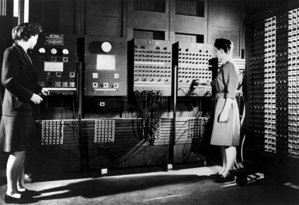
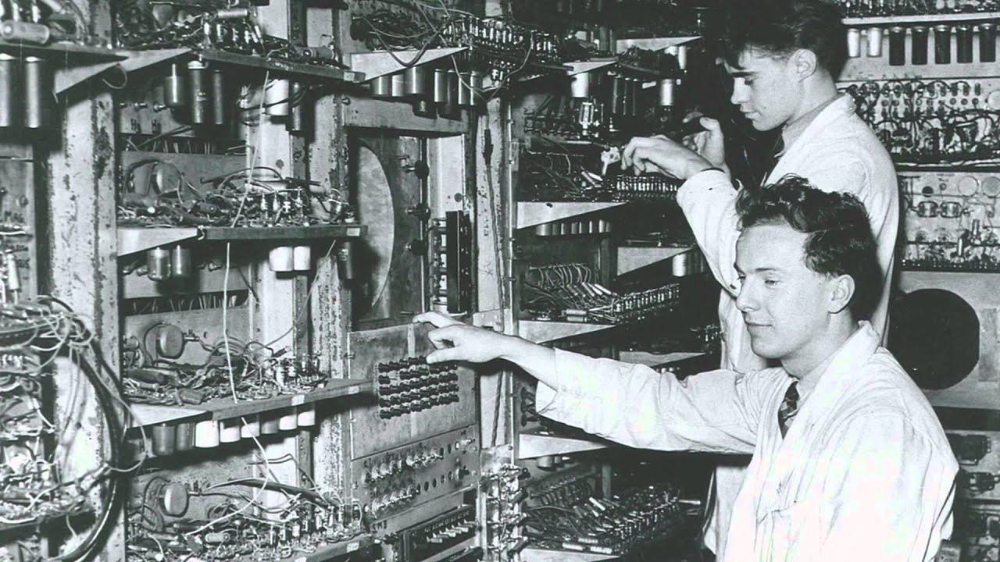
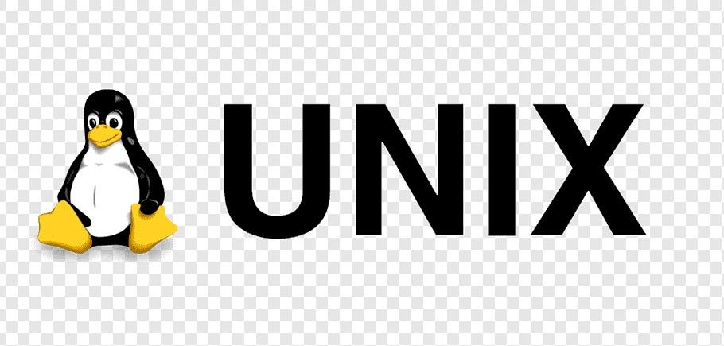
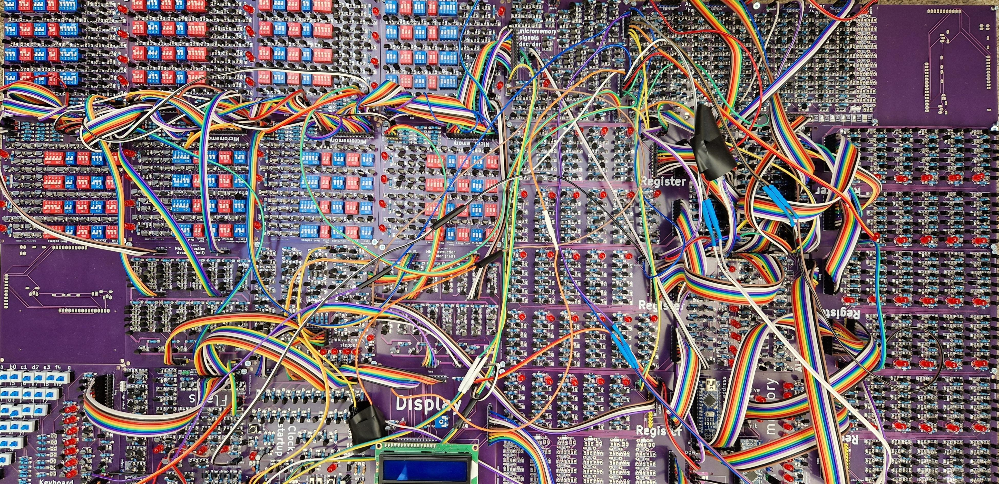
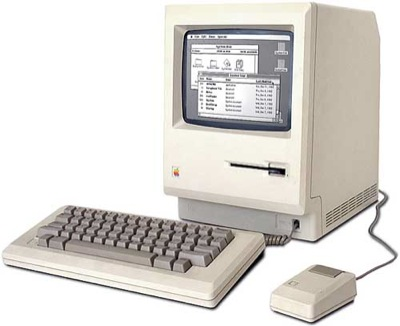
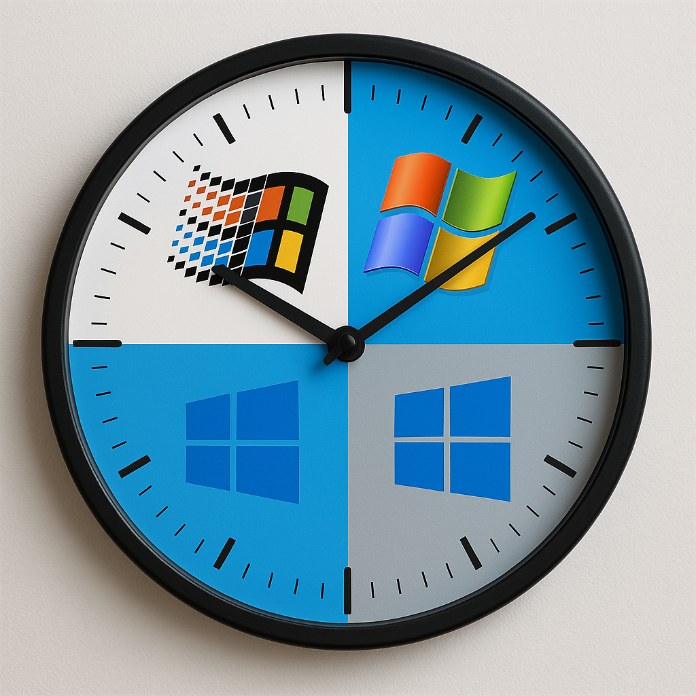
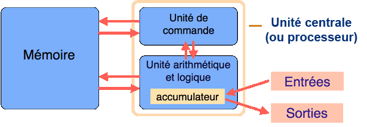

Histoire de l'Architecture et des OS
Frise Chronologique
L'ENIAC
Premier calculateur programmable par câblage, créé par John Mauchly et J. Presper Eckert aux États-Unis.
- Structure : Machine monumentale de 27 tonnes et 170 m².
- Programmation : S'effectuait manuellement par recâblage physique.
- Performances : Environ 5 000 additions par seconde.
- Limites : Fragile, absence de mémoirevive moderne

Le Modèle de Von Neumann
John von Neumann révolutionne l'informatique avec le concept de machine universelle.
- Innovation : Les instructions et les données sont stockées dans la même mémoire.
- Composants : Unité de contrôle, unité arithmétique et logique, mémoire et entrées/sorties.
La "Manchester Baby"
Le premier ordinateur au monde à avoir exécuté un programme stocké en mémoire, validant l'architecture de von Neumann.
- Premier programme : Écrit par Tom Kilburn et exécuté le 21 juin 1948.
- Héritage : C'est l'ancêtre direct de nos processeurs actuels.
- Performance :Calcul du plus grand facteur premier de 218 en 52 minutes

Lancement d'Unix
Système pionnier, source d'inspiration pour la majorité des OS développés par la suite.

Explosion des microprocesseurs
Le bond technologique est immense : on est passé des microprocesseurs de 1970, limités à 2 000 transistors et 0,092 million d'instructions par seconde, à des processeurs modernes capables de gérer 2 000 milliards d'instructions grâce à leurs 38 milliards de transistors.
- Puissance : Passage de quelques milliers à plusieurs dizaines de milliards de transistors.

Mac OS
Apple commercialise le premier OS graphique grand public pour les ordinateurs personnels Macintosh.

Microsoft Windows
Première version du système d'exploitation Windows, qui est aujourd'hui utilisé par presque 90% des ordinateurs personnels.

Apparition de Linux
Première version du système Linux, qui est gratuit open source et utilisé sur divers matériels informatiques.
L'architecture de Von Neumann
Ce modèle sépare l'unité de calcul de la mémoire. C'est encore la base de nos ordinateurs actuels.
